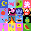

William Rech

personal resumé
Projects
-
Rangoon - a short platformer game made in Go and compiled to webassembly
-
Whimsy Meadow - a fully online multiplayer game written from scratch in Go (backend) and Three.js (frontend)
-
Kaizomorph: Pets - a simple clicker game written in Go
-
Dokisort - a sorting algorithm visualizer written in Python
-
dreambuffer - a protobuf-based game object storage
-
leetCodeC - solutions to various leetcode problem sets in C
-
Fantasy of Okku - a TTRPG
Interests
Machine Learning
- Can we construct a Gödel machine whose program synthesis is based on stochastic search and natural selection instead of formal proofs?
- Can we define a useful inverse reward function by having an agent move away from a goal rather than towards one?
- Could clustering algorithms use fractals to search for related data points by taking advantage of self-similarity and Hausdorff dimensionality?
Information Theory
- Can we encode large files (>2MB) with an easily decodable error-correcting format that fits in a space about the size of a QR code?
- What is the inverse relationship between compression algorithms and the loglog algorithm?
Copyright (c) 2023 William Rech